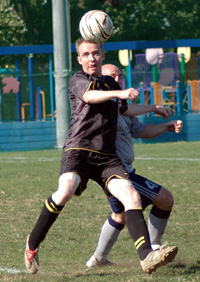

OLD STORIES - November 2007 |
||||
YCAC Can't Make Swiss Roll.YC&AC, Sunday 25th November,
I'll have the Toblerone Darling.
|
|  |
|
Panther Chris Batterham held in check by YCAC's Paul Wood. |
YC&AC, Sunday 18th November,
YCAC Seconds record prior to this game had such pleasing symmetry - Played 4, Won 2, Lost 2, Goals For 11, Goals Against 11 - it seemed a shame to play and muck those well-balanced stats up. But duty called.........
A typically bright and blustery day at the YCAC for the 5th game of this campaign saw us set to play league new boys Panthers. Having done our usual rigorous scouting and pre-match preparation, we knew they had given a number of teams a very close game and we expected similar. more ...
WK.
Misato, Saturday 17th November,
Spotlight on the vagabonds young talent. The season is still young, about a quarter way along, but there has been some evolution with the Saharas. Alex has expanded his game noticeably with providing the ball as well as going it alone. Francis, an all round type of player, last season virtually undetected, has become a key player this season – he can tackle defend and attack and score!
A customary word on the pitch conditions: wadi. Mudskippers and lungfish flapped around the six yard box at both ends and the center circle. more ...
GQ.
Misato, Saturday 17th November,
With 4 key players out and several unusual positional changes Maritizio was in trouble. In fact moments in the game Maritizio had their French Goal Keeper Vince playing on field as Maritizio found itself running out of options and ammunition. But with Vince with a new sense of being did not embarass himself or the team. We hope to see that again! more ...
WK.
Hachioji Park, Sunday 11th November,
A headless horseman rode through hajioji park. He was followed by a pale horse. I think I was the only one who saw them. The surface water was a couple inches deep in places, pooling up to 3 meters in diameter. Vags burned off valuable energy in vain trying to squeegee it off. Steve G with an ingenous, though heavy, tool – a goal – which removed about 2% of the water and warmed us up, to say the least. Evening is a crap time to play a match but who is complaining. The ref was late but smelled good when he showed up, just in time for a downpour that put back the 2% with interest. more ...
GQ.
YC&AC, Sunday 11th November,
Waking up on Sunday morning, you could have been forgiven for thinking the Geckoes v YCAC game would be cancelled. After all, the fixture was due to be played on a grass pitch and it had rained for the previous couple of days but thankfully the game was at YCAC and not at Misato so it could be played as scheduled. more ...
RK.
YC&AC, Sunday 4th November,
Vags' apparent quest for relegation was dealt a severe blow after a gutsy 4-1 win against YCAC on Sunday. The win sent shockwaves through an already unpredictable league, leaving leaders BFC quaking in their Matrix pods after they dropped points on Saturday night. more ...
KG.
Hachioji Park, Sunday 4th November,
At last, the monkey is off the back. The Embassy are off the mark in Division 1 having finally delivered on the promise hinted at in patches throughout the season. And while a casual glance at the score line may give a slightly false account of the match as a whole all would agree that the three points were played for and got. more ...
TM.
Hachioji Park, Sunday 4th November,
The league table said that the Embassy, with 6 defeats from 6 games, were the worst side in Division One and it is true that they are the most limited side that the Jets have faced this season, although that opinion would probably have to be revised if we could play against ourselves! more ...
RK.
Hachioji Park, Sunday 4th November,
A fine late Autumn day. A beautiful astroturf playing surface. What more could you ask for? Well, a pitch that was smaller than Okinawa would probably have been appreciated by some of the veterans on parade at Hachioji Park, as would a Saturday kick-off to allow a proper post-match drinkathon without work the next day, but these are some of the trials and tribulations that a homeless, itinerant bunch of Old Boys must cope as they face up to life after St Mary's. more ...
TC.
Hachioji Park, Saturday 3rd November,
The two top of the table clashes that really mattered in football last weekend both ended in slightly controversial draws, though Arsenal and Man Utd probably had a marginally bigger crowd and Sala are probably only second until the rest of the league catches up on games played…Anyway, top of the table clash it was, but there wasn’t much quality on show to confirm it. more ...
RC.
Hachioji Park, Saturday 3rd November,
Sala upset some of BFC's Yin and Yang in a frenetic 1-1 draw punctuated with moments of high drama, tragi-comic errors and the odd sliver of genuine skill. Very odd. more ...
PB.